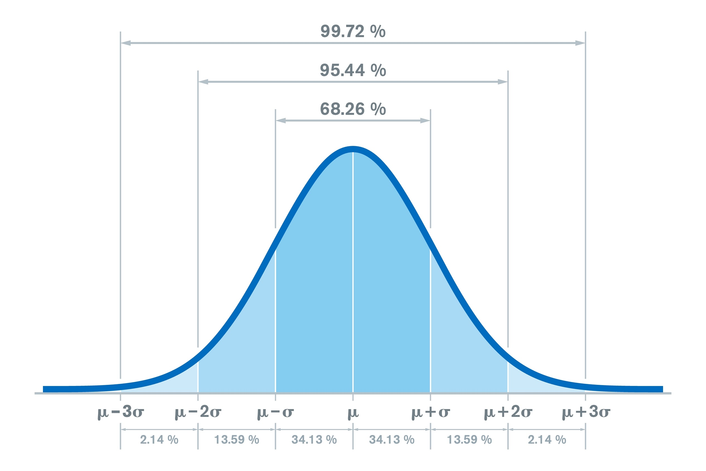

딥러닝은 2014년 판별 모델 분야에서는 큰 성공을 거두었으나 생성모델은 성과를 내지 못했습니다.
그 때 이안 굿펠로우(Ian Goodfellow)와 연구진은 복잡한 마르코프 체인이나 근사추론을 배제하고
역전파와 드롭아웃만을 사용하여 데이터를 생성하는 GAN을 발표하였습니다.
적대적 모델링 프레임워크는 일반적으로 심층 신경망으로 매개변수화된 두 개의 구별되고 적대적인 미분 가능 함수를 동시 다발적으로 실행하고 최적화한다.
쉽게 말하자면 인공 신경망에 생성자와 판별자를 두어 적대적인 관계를 유지하며,
역전파를 위한 미분 가능한 함수를 생성자와 판별자를 학습 과정 내내 동시에 훈련한다.
이는 한쪽이 편향되게 학습이 잘되는 것을 막아주며 성능을 끌어올리는 과정을 반복한다.
첫 번째 구성 요소는 생성 모델 (Generative Model)로 $G(z; \theta_g)$로 표기한다.
쉽게 비유를 들어 설명하자면,
$G$는 위조 지폐를 찍어내는 기계이며
$\theta_g$는 이 기계를 조작하는 요소 이다. ( 인공 신경망의 가중치 )
$p_{data}$와 $p_g$는 진짜 지폐의 특징을 $p_{data}$라 하고, 만들어낸 가짜 지폐의 특징은 $p_g$로
$G$라는 기계를 통해 $\theta_g$를 조절하여 $p_{data}$와 $p_g$를 최대한 동일하게 만드는 것을 목표로 한다.
여기서 사전에 정의된 확률 분포인 $p_z(z)$에서 무의미한 난수 $z$를 통해 이미지를 매핑한다.
여기서 매우 중요한 점은 생성 모델 $G$가 확률 밀도 함수를 명시적으로 정의하지 않는다는 것이다.
대신, 샘플 $G(z)$의 분포로서 $p_g$를 암묵적으로 정의하는 표본 추출 메커니즘을 제공한다

사전에 정의된 확률 분포 $p_z(z)$란 AI학습 이전 어떤 규칙으로 난수를 뽑을지 정해놓은 것 이다.
우리는 이때 난수를 발생 시킬 때 아무렇게나 발생 시키는 것이 아닌
정규 분포(가우스 분포)나 균등 분포등 규칙에 따라 발생시킨다.
확률 분포는 모델이 학습하여도 불변이며 그저 G에게 난수를 공급해주는 단순한 발생기이다.
왜 정규 분포나 균등 분포 등 규칙에 따르는 가 하면
1. 계산의 효율성
컴퓨터에서 난수 발생은 비용이 꽤 드는 작업인데 해당 분포에서 뽑는 것이 가장 효율적이다.
2. 연속성과 보간
만약 우리가 $z_1$에서 웃는 얼굴을 조금 다른 $z_2$에서 우는 얼굴을 만든다고 하면
정규 분포는 연속적이기에 웃는 얼굴이 서서히 우는 얼굴로 변하는 과정을 관찰 할 수 있다.
논문에서도 잠재 공간 $z$의 좌표 사이를 보간하여 숫자가 서서히 다른 숫자로 변하는 모습을 증명했다.
3. 인공 신경망의 활용
G는 컴퓨터 입장에선 함수 근사기 이다.
백지의 종이를 즉, 정규 분포 노이즈를 주더라도 신경망은 학습을 통해 백지를 지폐로 변환시킨다.
우리가 다루기 쉬운 재료를 주면 신경망은 그 것들을 다듬어준다.
1. 보간 (Interpolation):
두 개의 서로 다른 지점(데이터) 사이의 비어있는 중간 값들을 수학적 규칙에 따라 부드럽고 자연스럽게 추정해서 채워 넣는 기법. GAN에서는 한 이미지에서 다른 이미지로 변할 때 중간 과정이 깨지지 않고 연속적이고 자연스럽게 이어지는 것을 보여주는 강력한 성능 증거로 쓰인다.
예를 들어 $z_1 = 1$과 $z_2 = 5$가 있을 때 각각의 숫자를 선형적으로 변화시켜 서서히 1을 5로 만드는 것 이다
(예: $z_1$ 90% + $z_2$ 10% $\rightarrow$ 80% + 20% $\rightarrow$ ...)
이는 신경망이 외운 것이 아닌 이해했음을 증명한다.
이전의 생성 모델이 이미지를 거대한 수학으로 만드는 것으로 완벽하게 적어내려 했다면
$G$는 노이즈 $z$를 입력 받아 $G(z)$를 계속해서 만들어주는 공장 역할을 한다.
여기서 수 많은 이미지들이 자연스레 어떤 특징을 지니게 되며 이는 분포($p_g$)를 의미한다.
이는 곧 가짜가 모여 자연스럽게 진짜와 비슷한 데이터의 무리 ($p_g$)가 형성된다는 것이다.
두 번째 구성 요소는 판별 모델(Discriminative Model)로, $D(x; \theta_d)$로 표기된다.
$G$가 위조지폐 생성자라면 $D$는 경찰에 비유된다.
이 모델은 이진 분류기로서 기능하며, 표본 $x$가 생성 모델 $G$에 의해 생성된 데이터가 아니라,
$p_{data}$에서 유래했을 확률을 나타내는 단일 스칼라 값을 출력한다.
목차 1에서 살펴본 두 신경망 간의 역학은 영합, 최소최대 게임으로 수학적 모델링이 이루어 진다.
가치 함수(Value Function) $V(G, D)$는 두 모델의 최적화 궤적을 지시하며 다음과 같이 정의된다.